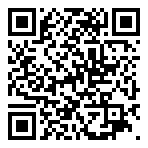

Séquence 1 : Découverte des objets techniques
Qu'est-ce qu'un objet technique ? À quels besoins répondent les objets qui nous entourent ?
🔗 Lien direct vers cette page

Scanne le QR code, ou saisis ce code sur la page d'accès direct du site.
- Ouvre PRONOTE, Espace Élèves, avec l'identifiant que tu utilises déjà.
- Va dans Cahier de textes, puis Travail à faire.
- Choisis la ligne de Technologie correspondant à cette activité.
- Clique sur Déposer ma copie et joins ton fichier, ou une photo nette de ta feuille.
Si la connexion ne passe pas : rends ta feuille en main propre au professeur à la séance suivante. Le dépôt en ligne ne remplace pas le travail, il sert seulement à le transmettre.
| Niveau | 5ème | Durée | 4 séances de 1h30 (6 heures) |
| Thème | Thème 1 : Les objets et les systèmes techniques : leurs usages et leurs interactions | ||
| Compétences | Décrire les liens entre usages et évolutions technologiques Caractériser et choisir un objet technique | ||
💡 Situation déclenchante
Regarde autour de toi dans la salle de classe. Tu peux observer de nombreux objets : une table, une chaise, un stylo, un ordinateur, une lampe, une plante verte...
Certains de ces objets existent naturellement dans la nature, d'autres ont été conçus et fabriqués par l'Homme pour répondre à un besoin précis. En Technologie, nous nous intéressons à ces objets fabriqués par l'Homme : les objets techniques.
🎬 Situation déclenchante en vidéo
Porte_clefs_fonction_sifflet, 00:00:09 · PodEduc (chaîne « Second Degré »)
Auteur : Gilles Durand. Licence : non précisée. Réutilisation : iframe. Voir la fiche d'origine
Réserve : VÉRIFIÉ LE 02/09/2026 : page en ligne, titre exact « Porte_clefs_fonction_sifflet » (minuscule au c, contrairement au relevé initial), durée 00:00:09 conforme, auteur et chaîne conformes. AUCUNE LICENCE AFFICHÉE sur la page et aucun lien de téléchargement actif : intégration par iframe uniquement, réhébergement exclu. REQUALIFICATION : la fiche annonce elle-même une « illustration », c'est-à-dire la démonstration d'une solution déjà conçue, et non un problème ouvert. Elle ne déclenche que si le professeur coupe avant l'explication et fait formuler la question. Le relevé initial affirmait la vidéo « sans parole » : la page ne le dit nulle part et je n'ai pas visionné le fichier, À VISIONNER AVANT LA SÉANCE, ne pas présumer qu'elle est muette. Ne pose pas la question naturel / technique, premier temps de la séquence : le professeur doit l'installer autrement. Objet issu d'un projet de lycée (EDE CIT, seconde), pas de collège. Neuf secondes : prévoir deux ou trois passages.
Lecture depuis la plateforme d'origine. En cas de coupure, utilisez le repli sans écran ci-dessous.
Prompt de génération, variantes et repli sans écran : dossier des situations déclenchantes.
Activité 1 : Objet naturel ou objet technique ?
Observer et classer
Complète le tableau ci-dessous en classant les objets proposés en deux catégories : objet naturel (présent dans la nature sans intervention humaine) ou objet technique (fabriqué par l'Homme).
| Objet | Objet naturel | Objet technique | Justification |
|---|---|---|---|
| Un caillou | |||
| Un smartphone | |||
| Une fleur | |||
| Un vélo | |||
| Un morceau de bois | |||
| Une lampe de bureau | |||
| Un fruit | |||
| Un crayon |
Définir
À partir de tes observations, propose une définition de l'objet technique :
Activité 2 : Le besoin
Identifier les besoins
Pour chaque objet technique, identifie le besoin auquel il répond et la fonction d'usage (à quoi il sert).
| Objet technique | Besoin | Fonction d'usage |
|---|---|---|
| Le vélo | ||
| La lampe de bureau | ||
| Le smartphone | ||
| Le réfrigérateur | ||
| La calculatrice |
Comparer des objets techniques
Plusieurs objets techniques peuvent répondre au même besoin. Compare les objets suivants qui permettent tous de se déplacer :
| Critère de comparaison | Vélo | Trottinette électrique | Voiture |
|---|---|---|---|
| Source d'énergie | |||
| Vitesse max. (environ) | |||
| Nb de passagers | |||
| Impact environnemental | |||
| Prix approximatif |
Activité 3 : Fonction d'usage et fonction d'estime
- Fonction d'usage : C'est le service rendu par l'objet technique, ce à quoi il sert concrètement (identique pour tous les objets de même type).
- Fonction d'estime : C'est ce qui fait qu'on aime ou qu'on préfère un objet plutôt qu'un autre (design, couleur, marque, forme...).
Distinguer les fonctions
Pour chaque paire d'objets ci-dessous, identifie ce qui relève de la fonction d'usage (commune aux deux) et ce qui relève de la fonction d'estime (ce qui les différencie).
| Paire d'objets | Fonction d'usage (commune) | Fonction d'estime (différences) |
|---|---|---|
| Montre classique / Montre connectée | ||
| Stylo Bic / Stylo plume | ||
| Baskets de sport / Chaussures de ville |
📝 Synthèse : À retenir
Complète cette synthèse avec les mots suivants : besoin, objet technique, fonction d'usage, fonction d'estime, naturel, fabriqué
Un objet ........................ existe dans la nature sans intervention de l'Homme.
Un ........................ est un objet ........................ par l'Homme pour répondre à un ........................ .
La ........................ est le service rendu par l'objet : à quoi il sert.
La ........................ est ce qui fait qu'on aime un objet : son design, sa marque, sa couleur...
- Décrire les liens entre usages et évolutions technologiques des objets et des systèmes techniques
- Caractériser et choisir un objet ou un système technique selon différents critères